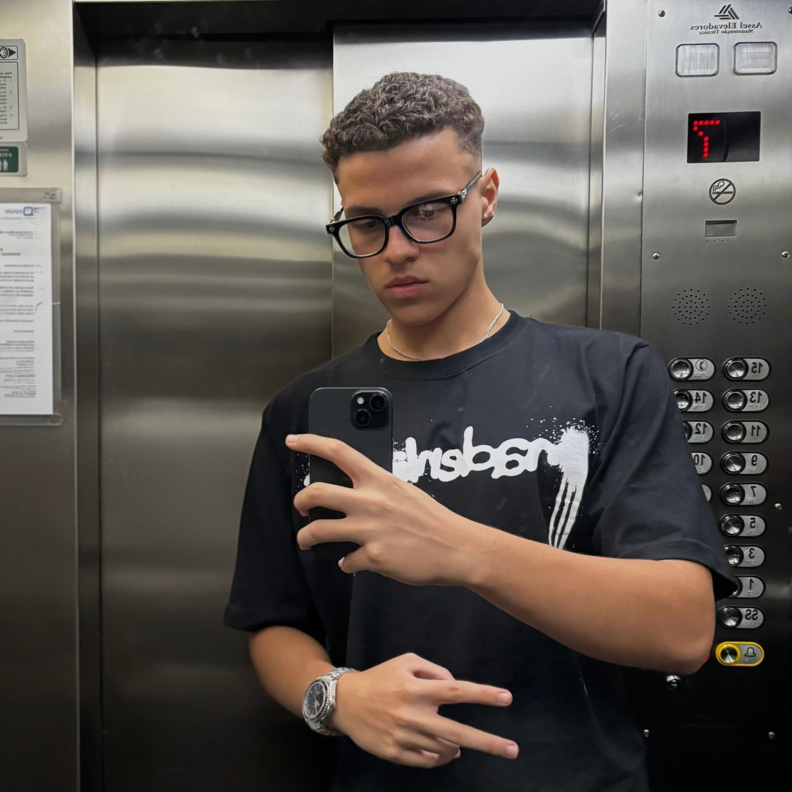
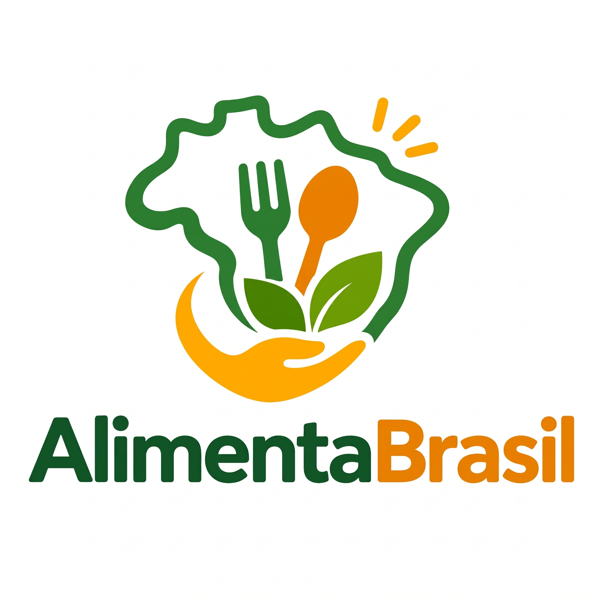
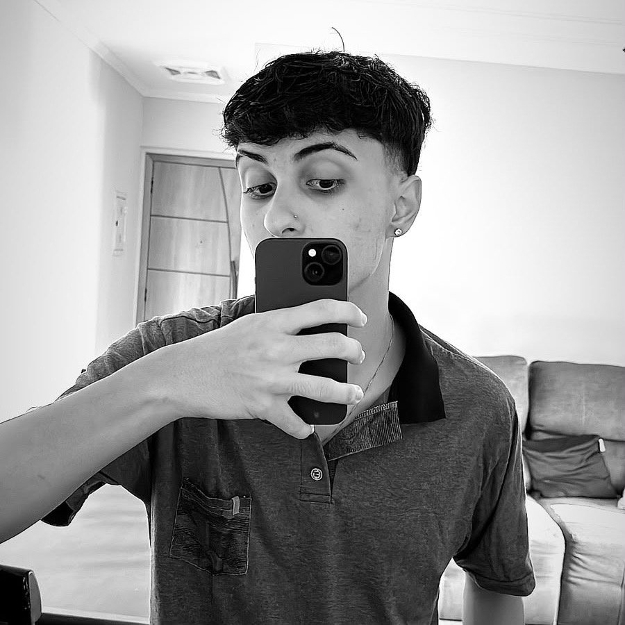
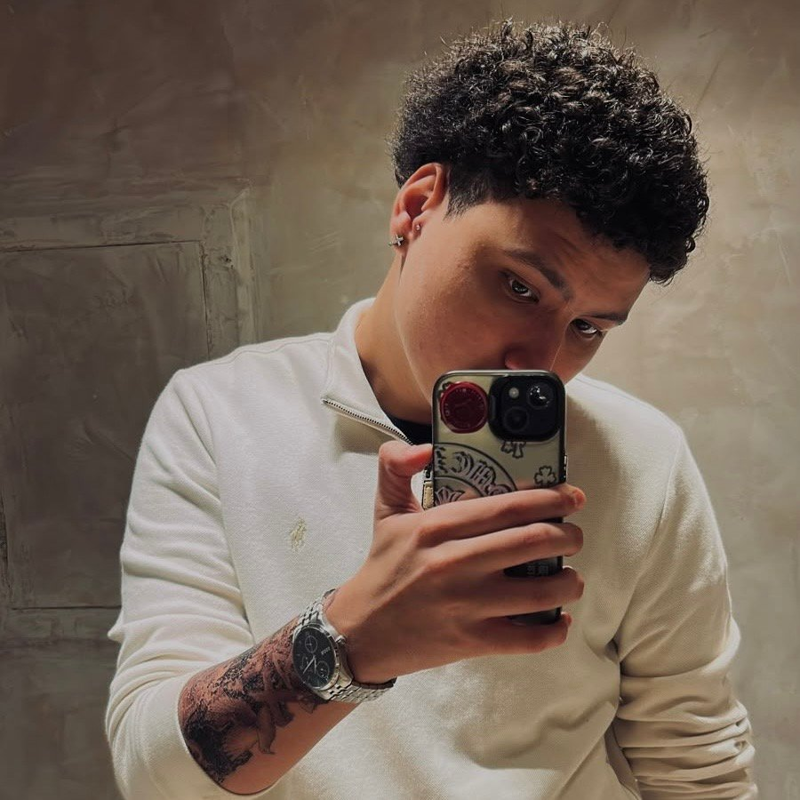
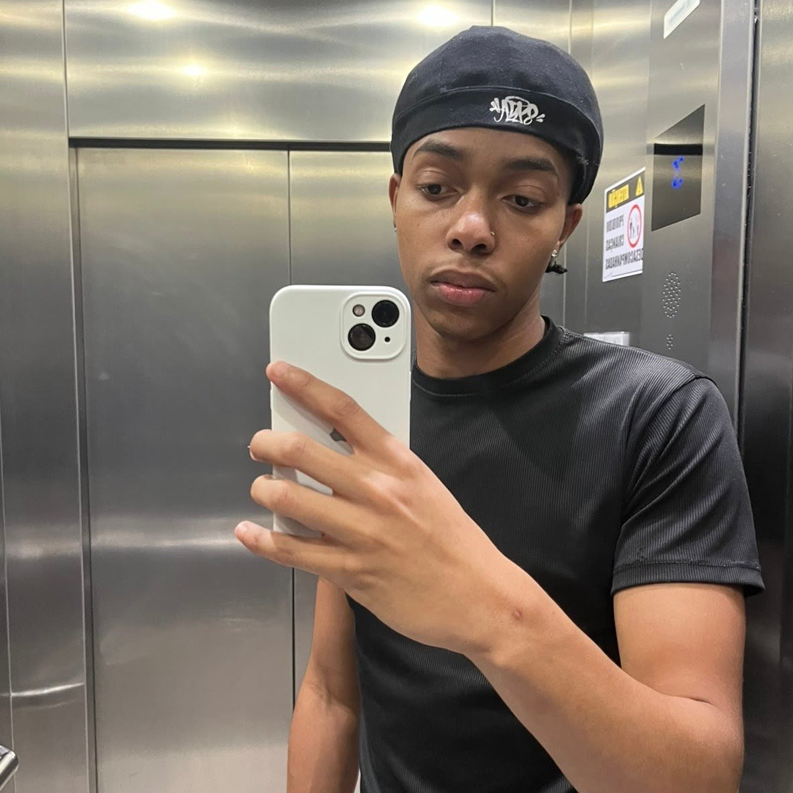

Murilo Ripani Barbeiro
RM: 576374 | Turma: 1TDSPS
GitHub
CitizenTech contra a fome e o desperdício
Conheça os alunos responsáveis pela construção da CitizenTech AlimentaBrasil.

RM: 576374 | Turma: 1TDSPS
GitHub
RM: 575087 | Turma: 1TDSPS
GitHub
RM: 576078 | Turma: 1TDSPS
GitHub
RM: 574575 | Turma: 1TDSPS
GitHubRM: 575758 | Turma: 1TDSPS
GitHub